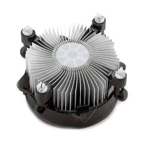
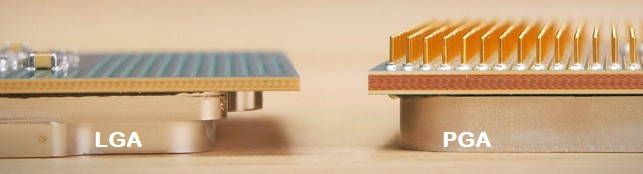
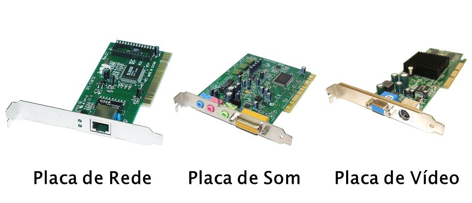
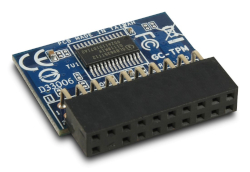
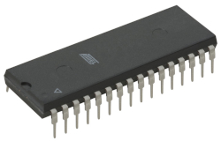

Aprenda Hardware
Tudo sobre Hardware Parte 3
Definindo Requisitos do PC
Vamos supor alguns programas de desenvolvimento de programação (pode ser o XAMPP, que transforma a máquina num servidor PHP/MySQL, o Netbeans, IDE usada pra Java e outras linguagens e o Pycharm, usada pra Python).
Veja as recomendações mínimas para o Netbeans, por exemplo:
Microsoft Windows Vista SP1/Windows 7 Professional:
Processador: Intel Pentium III 800MHz ou equivalente.
Memória: 512 MB.
Espaço em disco: 750 MB de espaço livre em disco.
Ubuntu 9.10:
Processador: Intel Pentium III 800MHz ou equivalente.
Memória: 512 MB.
Espaço em disco: 650 MB de espaço livre em disco.
Macintosh OS X 10.7 Intel:
Processador: Intel Dual-Core.
Memória: 2 GB.
Espaço em disco: 650 MB de espaço livre em disco.
No geral, das ferramentas de desenvolvemos, a mais pesada provavelmente seria o Android Studio, por ser em Java e ter muitos aplicativos. Precisará de 4 GB no mínimo (de preferência 8), e também bastante espaço em disco.
Faremos um computador que terá as configurações melhores possíveis, com dual-boot de Windows e Linux. As para games exigem configurações mais pesadas que para desenvolvedores.
Muitas vezes, montar uma máquina tem custo-benefício melhor. Entre em alguns sites de vendo para pesquisar.
Outro problema, é que ao comprar um produto pronto, é que não podemos adicionar novos componentes como RAM, pois causa perda de garantia.
Como será nosso PC?
Até o momento, as configurações mais próximas para o computador seriam as que suportassem o Android Studio (a IDE pra programar que exige mais recursos).
No caso, o processador seria a da sexta geração, (Pentium G4560), outra opção seria o Intel Core i3.
A placa-mãe não precisa ser a melhor, pode ser uma mais razoável, mas não pegue uma muito ruim.
Primeiro, costumamos escolhendo o processador, para depois escolhermos a placa-mãe, e outros componentes.
No caso do HD, temos hoje a opção SSD, que não funciona com um "disquinho" girando, tipo um pen-drive gigante (hoje existem inclusive externos). O HD é a coisa mais lenta atualmente, por funcionar de forma parecida com uma vitrola, mas ele tem mais espaço que SSD. SSD é mais rápido para iniciar, por exemplo. Pegue uma com uma capacidade miníma necessária ou mais.
Teclado e mouse não tem muita distinção, mas o mouse é bom ser com mais botões.
Os gabinetes costumam vir com uma fonte genérica, que não são muito boas, então é melhor arranjar uma melhor, até pelas diferenças de voltagem de alguns componentes. Uma de 400 W atende bem o requisito. Hoje também temos os coolers de refrigeração líquida.
Monitor não temos muita distinção também, mas bom não pegar um com frequência muito baixa.
O sistema operacional também merece atenção, já que o Windows original costuma ter várias versões, que também tem configurações recomendadas pro aparelho. O Linux, apesar de gratuito, também exige configurações específicas.
O gabinete tem que ter uma certa resistência também, nada de algo muito barato.
Unidade Central de Processamento (CPU)
A CPU é responsável pelo processamento de informações do computador, dentro do processador está o cache, registradores e outros tipos de memórias. É como o "cérebro" do computador, já que é responsável por trabalhar os dados enviados por e para outros componentes e os direcionar da melhor maneira, comandando tudo.
Usaremos de referência o processador Pentium G4560, que tem 3.5Ghz, 3 MB de cache, é dual-core, tem 4 threads, com 64 bits, de 6ª geração e custa em média uns 350 Reais.
Para escolhermos bem um processador, veja a quantidade de GHz (quanto maior, melhor), o cache (quanto mais, melhor), a quantidade de núcleos físicos (que dividem as tarefas, quanto mais, melhor), de threads (quanto mais, melhor) e os bits (32 ou 64) também são importantes, dependendo do sistema escolhido (processadores de 32 bits só acessam até 4 GB de RAM, processadores de 64 bits processam muito mais memória, mas só quando usados também com sistemas de 64 bits), o número de bits (32 ou 64) é a quantidade de bits que o processador consegue responder de uma só vez. A geração também influi, mas menos que essas outras opções.
PS: O sistema 32 bits pode ser identificado também como x86, enquanto o de 64 bits é identificado como x64.
O cache de CPU é uma área de memória rápida localizada no processador.
A medida em Hertz representa a contagem de ciclos que o circuito realiza a todo segundo (1 Hz é um ciclo por segundo). Como são valores muito altos geralmente usamos Khz (1.000 ciclos por segundo), Mhz (1.000.000 de ciclos por segundo) e Ghz (1.000.000.000 de ciclos por segundo). Um processador de 4,0 Ghz realiza 4 bilhões de ciclos por segundo.
O thread é uma sequência de instruções que podem ser executados pelo processador. Em computação, um thread é a menor unidade de processamento que pode ser agendada pelo sistema operacional.
Na verdade, o processador é o CPU, e não o gabinete, como a maioria pensa.
Dentro da caixinha, além do processador, tem o dissipador de calor (a ventoinha interna do computador). A caixa indica o soquete padrão do processador, que no caso é LGA1151, e a placa deve ser do mesmo padrão, inclusive o número.
PS: Cuidado para não colocar a mão nos contatos do processador, pegue sempre de lado, como se faz com um CD/DVD.
Veja a imagem de um processador:

E do seu dissipador:
Mais sobre Processadores
Para a compreensão, é preciso conhecer:
- Família x86 de 16 bits – processador 8088, usado nos primeiros PCs.
- Processadores de 32 bits (x86) – 386, 486, Pentium I, II, III e IV, Pentium Celeron. Conseguem endereçar até, no máximo, 4 GB de RAM.
- Processadores de 64 bits (x64) – AMD 64 bits. Conseguem endereçar quantidades maiores do que 4 GB de RAM.
- Processadores Multicore – tecnologia de processadores com mais de um núcleo de processamento.
- Intel Core – processadores Core 2 Duo, Pentium Dual Core, Core 2 Quad, Core i3, i5 e i7.
Houve geração de processador de 16 bits, de 32 bits e de 64 bits, além de algumas outras inovações, como a quantidade de núcleos de processamento que cada processador pode ter. Isso se refere a quantidade de bits que a CPU processa de uma só vez.
Nos números dos processadores Intel, o número que vai do i3 ao i9 diz da potência do processador (quanto maior, mais potente, a i3 para uso comum, i5 para gamers e i7 para alto desempenho). Já sobre as séries, elas variam, da menor pra maior, T, S, E, H, K e R (sendo, por exemplo, a T pra uso comuns, S um meio-termo e a H para gamers, a ausência da letra indica uma versão padrão). Já o número (como 4560) mostra qual é a geração (1ª número) e a hierarquia (últimos 3 números, quanto maior, melhor). Temos também os processadores Intel mais básicos, da linha Pentium (os quais chegaram até o Pentium Dual Core), o Pentium de menor custo e menos potente é o Celeron.
Nas últimas versões, os processadores Intel i3, i5, i7 e i9 perderam o i
, recebendo denominações como Intel Core 3 Series 1 e o Intel Core Ultra 7. Os processadores mais básicos como o Pentium (incluindo o Celeron) foram substituídos pelo Intel Processor, como o Intel Processor N200. Veja as classificações abaixo:
- Os processadores de alto desempenho da Intel é o Intel Core Ultra, que no caso são o Ultra 5, Ultra 7 e Ultra 9 (o mais poderoso). Um exemplo é o Intel Core Ultra 7 Processor.
- Os processadores de desempenho padrão são o Intel Core Processor Series, que são o 3, 5, 7 e 9 (substituindo os anteriores i3, i5, i7 e i9), a série faz referência à geração. Um exemplo é o Intel Core 5 Processor.
- Os processadores de baixo custo são o Intel Processor ou Intel N Series, eles são os sucessores dos processadores Pentium, incluindo o Celeron. Um exemplo é o Intel Processor N200.
A unidade lógica e aritmética (ULA) é um circuito digital que realiza operações lógicas e aritméticas. A ULA é uma peça fundamental da unidade central de processamento (CPU), e até dos mais simples microprocessadores. É na verdade, uma grande calculadora eletrônica
e sua tecnologia já estava disponível quando os primeiros computadores modernos foram construídos.
Além dos núcleos físicos disponíveis nos processadores, também temos os núcleos lógicos (threads), que são criados pelos processadores de maneira virtual.
Outra opção de processadores muito utilizada é os AMD, com essas classificações:
- Sempron: Já descontinuado, processadores limitados de baixo custo, substituto do Duron.
- Série A: Mais básica, para uso básico que não exija muito processamento.
- Athlon: Para usos avançados, mas sem muita intensidade.
- Ryzen: Ótima para usos avançados, inclusive para jogos. Versões 3, 5, 7 e 9.
- ThreadRipper: É uma subdivisão do Ryzen, bastante potente.
Além disso, a geração dos processadores AMD também são definidas por números.
Os processadores têm dois tipos de padrões que devem ser compatíveis com as placas-mãe: LGA e PGA.
No padrão LGA, os contatos (pininhos) ficam na placa-mãe e as entradas no processador e são mais comuns em processadores Intel. Já no padrão PGA é justamente o contrário (os contatos que ficam no processador). O PGA é um padrão mais antigo e é mais comum nos processadores AMD (não em todos).
O processador e a placa-mãe devem ser compatíveis entre si (ou ambos é LGA ou ambos é PGA, não podendo ter o processador de um padrão e a placa-mãe de outro). Também deve se prestar atenção nos números ao lado (por exemplo, o processador LGA1151 deverá ser usado numa placa-mãe também LGA1151, que tem 1151 pinos de contato).
Veja como são os padrões de pinagem dos processadores:
Existem também os processadores ARM, que são processadores com conjunto reduzido de instruções e que, por isso, consomem menos energia e esquentam menos, muito comuns em dispositivos como celulares, tablets e computadores mais simples como o Raspberry PI. Inclusive, muitos desses processadores costumam ser integrados com memória RAM e a GPU num mesmo componente, chamado de SoC (System on Chip, ou sistema em um chip).
Os processadores também seguem dois tipos de padrões basicamente: RISC (com conjunto limitado e mais simples de instruções, comum nos processadores ARM), e CISC (no caso de processadores de PC/Notebook, padrão no Intel e AMD).
Para entender, veja a quantidade de memória que um processador pode processar:
- 8 bits: 28 = 256 posições de memória = 256 B.
- 16 bits: 216 = 65.536 posições de memória = 64 KB.
- 32 bits: 232 = 4.294.967.296 posições de memória = 4 GB.
- 64 bits: 264 = 18.446.744.073.709.551.616 posições de memória = 16 EB (ExaBytes).
Os padrões 8 e 16 bits não são mais usados atualmente. O de 32 bits ainda é usado em alguns sistemas e programas, principalmente os mais antigos. Hoje em dia a maioria dos sistemas trabalham com 64 bits.
Fonte de Alimentação
As fontes são responsáveis por gerar a energia suficiente para todos os componentes do computador, de maneira adequada para cada um deles, além de ter o cooler para refrigeração do gabinete. Seria como o "sistema digestório" do computador.
A fonte escolhida para nosso computador é a da Corsair VS400, de 400 Watts (que já é suficiente para alimentar todos os componentes do PC), 6 - 3 A, com bivolt automático, e custa em média uns 200 Reais.
Procure as fontes que tenham o selo 80 Plus ou maior, isso indica o reaproveitamento da energia (no caso, a de 400 Watts fornece cerca de 320, que é 80%). Fontes que reaproveitam pouca energia podem não fornecer o suficiente para os componentes e sobreaquecer.
Note que a fonte, tem a ventoinha (cooler) para refrigerar, o botão de ligar e desligar, e dependendo do caso, até o botão de alternar entre 110 e 220 V (apesar da maioria ser bivolt).
Os conectores vindos com a fonte são de vários tipos, o ATX de 24 pinos por exemplo, é usado na placa-mãe, temos conectores para unidades de discos rígidos antigos, pra disquetes, o SATA que é usado nos discos rígidos atuais e de CD/DVD, alimentação extra pra placas de vídeo e de CPU (que costumam gastar mais), etc.
Lembrando que, quanto mais exigida a máquina, devemos se preocupar mais com a refrigeração, e consequentemente, com a alimentação da mesma.
A temperatura normal da CPU em execução fica entre 40° a 65°, executando programas mais exigentes ela pode chegar a 80-85°, mas se passar disso pode danificar o processador, principalmente se estender por um tempo mais longo. A placa-mãe e placa de vídeo devem estar numa temperatura aproximada também.
Uma curiosidade que muitos erram, é que o computador NÃO deve ser ligado em estabilizadores (coisa que praticamente só existe no Brasil). Algumas fontes identificam a diferença de tensão elétrica e nem ligam por isso. A própria fonte já ajusta automaticamente as diferenças de tensão e o estabilizador causa conflitos nisso.
Saiba também a diferença entre volts, ampere e watts. Os volts são a tensão (diferença de potencial), que geralmente é 110 ou 220. Os amperes são a corrente (quantidade de elétrons que passa no fio em um determinado tempo). Os watts são a potência (capacidade de pegar a energia e transformar em trabalho). Numa analogia a uma mangueira de água, os volts seriam a pressão da água, os amperes seriam o volume da água (fluxo) mesmo se ela estiver desligada, e os watts a velocidade que ela enche um balde.
As melhores marcas de fontes são: Antec, Corsair, ReDragon, EVGA e Aerocool.
Veja a imagem de uma fonte:

Placa-Mãe
A placa-mãe (ou placa lógica) é a parte que se conecta os demais componentes do computador, como HD, RAM, processador, placa de vídeo, unidades de disco, etc.
No exemplo do nosso computador, usaremos a placa-mãe Asus H110M-D, de 2400 MHZ, que suporta até 32 GB de RAM e processadores de 6ª e 7ª geração (do padrão LGA1151), tem USB 2.0 e 3.0, placa de som integrada e saídas HDMI e VGA, e custa em torno de 325 Reais.
Lembre-se que primeiro devemos escolher o processador, para depois escolhermos a placa-mãe com as configurações. Os números (como o 110) são só pra representar a geração da placa.
Dentro da caixa, virá o CD com os drivers, o "espelhinho" para encaixar as tomadas de conexão (USB, saídas e entradas de áudio, VGA, etc.) e dois cabos SATA.
Lembrando que devemos evitar tocar nos contatos e circuitos. As placas-mães costumam ter o desenho parecido, mas elas seguem um mesmo padrão, que deve ser o mesmo do cabinete (nesse exemplo, a placa é padrão Micro-ATX).
A placa tem um espaço para encaixar placa de vídeo (apesar dessa já ter uma placa integrada no processador, a APU, podemos colocar uma placa extra, também chamada de GPU). Aquele chip "douradinho" (ou prateado) é o dissipador de calor, debaixo dele tem um chip que controla algumas coisas como os periféricos, mouse, teclado, HD, etc. Ao lado tem uma bateria para configurar o relógio do computador.
Veja uma placa-mãe logo abaixo, e observe esses itens na imagem:

Outros tipos de placas que costumam vir com a placa-mãe, são as placas de rede, placa de som e em alguns modelos mais antigos, placa de fax-modem. Placas extras como as de captura e as citadas placas de vídeo adicionais podem ser colocadas também. Veja algumas delas abaixo:
Os dispositivos onboard são integrados na placa-mãe, e os offboard são externos e encaixados na mesma.
Também temos os conectores SATA, que costumam vir dois ou quatro, que ligam as unidades de disco (tanto o HD quanto as unidades de CD/DVD ou de cartões). Temos também os conectores do gabinete (como os das luzinhas que indicam quando o HD tá lendo ou gravando). Veja os conectores abaixo:

Temos também dois espaços para colocar os pentes de memória RAM, e também o conector de 24 pinos para a fonte, além desse, a fonte tem dois pontos pra ligar, onde tem 4 pinos.
Os conectores atrás são vários, o VGA, PS2 (para mouse e teclados), saídas para áudio e etc. Veja eles abaixo:

Tem também um "quadradinho" onde será colocado o processador. Os contatos na verdade ficam na placa-mãe, e não no processador (padrão LGA).
Verifique se a placa-mãe não tem arranhão, algum contato ou conexão danificada, etc. A garantia não cobrem isso.
Outro conector importante é do daquele cooler interno (o que vem com o processador).
A placa-mãe escolhida é do tipo Micro-ATX. Veja abaixo os principais tipos de placas-mãe existentes:

As melhores marcas de placas-mãe são: AsRock, ASUS/ROG, Biostar, EVGA, Gigabyte/AORUS e MSI.
BIOS e Firmware
A BIOS é um firmware para placas-mãe de computadores e um acrônimo para Sistema Básico de Entrada e Saída (Basic Input/Output System). Ele também pode ser conhecido como Sistema de BIOS, BIOS ROM ou PC BIOS.
Este firmware é utilizado durante o processo de inicialização (power-on/start up) em computadores baseados na arquitetura IBM PC. A BIOS é construída em PCs e é o primeiro software a rodar quando a máquina é ligada.
O seu nome é originado do sistema de Basic Input/Output usado no sistema operacional CP/M, de 1975. Computadores atuais possuem outros firmwares que a substituem chamados de UEFI ou EFI.
Já o firmware é a combinação da memória persistente, do código do programa e dos dados armazenados nele. Sistemas que possuem firmware podem ser encontrados em semáforos, eletrodomésticos, relógios digitais, computadores, periféricos de computadores, aparelhos celulares e câmeras digitais. Nos dispositivos, o firmware tem a função de fornecer o controle do programa para os aparelhos.
Nos computadores há outros tipos de firmware além da BIOS, UEFI e EFI. Placas de vídeo, placas de rede, controladores de disco rígido e placas de som, por exemplo, possuem seus próprios firmwares.
TPM - Trusted Platform Module
O TPM, ou Trusted Platform Module, é um chip de segurança que armazena informações criptográficas, ajudando a proteger dados sensíveis e garantir a integridade do sistema. Ele é utilizado em computadores e dispositivos móveis para fornecer funcionalidades como:
- Criptografia de Dados: O TPM pode gerar e armazenar chaves criptográficas, garantindo que os dados sejam protegidos contra acessos não autorizados.
- Autenticação: Ele pode ser usado para autenticar o hardware, ajudando a verificar se um dispositivo é genuíno e não foi alterado.
- Proteção contra Malware: O TPM pode ajudar a detectar alterações no sistema operacional e software, fornecendo um nível adicional de segurança contra malware.
- Inicialização Segura: Ele pode armazenar informações que garantem que o sistema seja inicializado de forma segura, evitando a execução de software malicioso antes que o sistema operacional seja carregado.
O TPM é uma parte importante das estratégias de segurança em muitos sistemas modernos, especialmente em ambientes corporativos. Além de gerar e armazenar chaves criptográficas, ele também protege os dados sensíveis e gera números aleatórios seguros.
Alguns sistemas, como o Windows 11, estão exigindo a presença dele no hardware do sistema, na versão 2.0 ou superior. Ele geralmente já vem soldado na placa-mãe, mas esse módulo pode ser colocado separadamente caso a placa tenha um conector TPM header.
Veja a imagem do módulo TPM:
Tipos de Memórias de um Computador
Conheça os papéis das memórias de um computador:
- Memória Cache: Agiliza a comunicação do processador com a memória principal, proporcionando um processamento mais eficiente. A memória cache são da, de menor capacidade para a maior, L1, L2 e L3, sendo que as menores são mais rápidas.
- Registradores: Uma função básica da memória do computador é de armazenar dados que serão processados. O processador recebe os dados e os deposita temporariamente na memória, e os registradores são os locais de memória onde esses dados ficam armazenados para que esse processamento aconteça.
- Memória Principal: Também chamada de memória RAM, onde acontece o processamento dos dados, suas principais características, seu funcionamento, seus tipos e os atuais modelos desta memória, como elas contribuem com a velocidade de processamento de um computador. Tudo que é registrado nela é apagado ao desligar o computador.
- Memória ROM: Que também é uma memória principal, onde são gravados os programas de inicialização de um computador, chamados de firmwares e seus principais tipos de aplicação. No entanto, ela é somente leitura.
A memória cache e os registradores estão incluídos no processador. A memória principal (RAM) costuma ser separada dos demais componentes. A memória ROM ela é soldada na placa-mãe, podendo existir em outros tipos de placas.
Veja a imagem da memória ROM:
